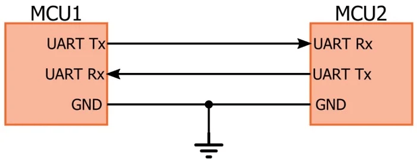
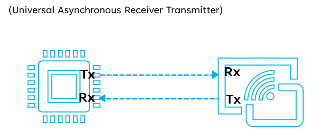

UART Communication – Complete Professional Tutorial
Universal Asynchronous Receiver-Transmitter (UART) is one of the most widely used serial communication protocols in embedded systems. It enables data exchange between microcontrollers, computers, sensors, GPS modules, Bluetooth modules, modems, and many other peripherals using asynchronous serial communication.
📌 Introduction
UART is a simple, hardware-supported serial communication method widely used in embedded systems because it needs only two main signal lines and does not require a clock line.
🧠 Key Concepts
- Two main signals:
- TX (Transmit)
- RX (Receive)
- Asynchronous communication
- Full-duplex communication
- No clock line required
- Configurable baud rate, parity, and stop bits
🌐 UART Communication Simulator Link
🔌 Basic UART Connection Diagram

🎞️ UART Working Animation (GIF)

⚙️ How UART Works (Step-by-Step)
1. Idle State
- TX and RX lines remain HIGH when no data is being transmitted
2. Start Bit
- Transmission begins with one LOW start bit
3. Data Bits
- Typically 8 data bits are sent
- LSB (Least Significant Bit) is usually sent first
4. Optional Parity Bit
- Used for simple error detection
5. Stop Bit(s)
- One or more stop bits indicate the end of a frame
- Line returns to HIGH state
📦 Data Format
| IDLE | START | DATA (5-9 bits) | PARITY (optional) | STOP (1/2 bits) |
🔢 Common UART Frame Formats
8N1
- 8 data bits
- No parity
- 1 stop bit
- Most common UART format
8E1
- 8 data bits
- Even parity
- 1 stop bit
8O1
- 8 data bits
- Odd parity
- 1 stop bit
7E1
- 7 data bits
- Even parity
- 1 stop bit
📥 Baud Rate
Baud rate defines the transmission speed in bits per second.
Common Baud Rates
- 9600
- 19200
- 38400
- 57600
- 115200
Important Rule
Both transmitter and receiver must use the same baud rate, data bits, parity, and stop bits. Otherwise, communication errors will occur.
🔁 Read & Write Flow
📝 Write Operation
- Configure UART peripheral
- Set baud rate and frame format
- Write byte or buffer into TX register
- UART hardware serializes data
- Data appears on TX pin
📖 Read Operation
- Configure UART peripheral
- Wait until RX data is available
- Read received byte from RX register
- Repeat until full buffer is received
🧩 ESP-IDF UART Examples
The examples below cover all common combinations:
- UART initialization
- single-byte transmit
- single-byte receive
- string transmit
- buffer transmit
- buffer receive
- line-based receive
- timeout-based receive
- echo example
- basic packet communication
ESP-IDF Setup
#include "driver/uart.h"
#include "driver/gpio.h"
#include "esp_err.h"
#include <string.h>
#define UART_PORT_NUM UART_NUM_1
#define UART_TX_PIN 17
#define UART_RX_PIN 16
#define UART_BAUD_RATE 115200
#define UART_BUF_SIZE 1024
#define UART_TIMEOUT_MS 1000
static esp_err_t uart_master_init(void)
{
const uart_config_t uart_config = {
.baud_rate = UART_BAUD_RATE,
.data_bits = UART_DATA_8_BITS,
.parity = UART_PARITY_DISABLE,
.stop_bits = UART_STOP_BITS_1,
.flow_ctrl = UART_HW_FLOWCTRL_DISABLE,
.source_clk = UART_SCLK_DEFAULT,
};
ESP_ERROR_CHECK(uart_driver_install(UART_PORT_NUM, UART_BUF_SIZE, UART_BUF_SIZE, 0, NULL, 0));
ESP_ERROR_CHECK(uart_param_config(UART_PORT_NUM, &uart_config));
ESP_ERROR_CHECK(uart_set_pin(UART_PORT_NUM, UART_TX_PIN, UART_RX_PIN,
UART_PIN_NO_CHANGE, UART_PIN_NO_CHANGE));
return ESP_OK;
}
1) Write Single Byte
esp_err_t uart_write_byte(uint8_t data)
{
int written = uart_write_bytes(UART_PORT_NUM, (const char *)&data, 1);
return (written == 1) ? ESP_OK : ESP_FAIL;
}
2) Read Single Byte
esp_err_t uart_read_byte(uint8_t *data)
{
if (data == NULL) return ESP_ERR_INVALID_ARG;
int len = uart_read_bytes(UART_PORT_NUM, data, 1, pdMS_TO_TICKS(UART_TIMEOUT_MS));
return (len == 1) ? ESP_OK : ESP_ERR_TIMEOUT;
}
3) Write String
esp_err_t uart_write_string(const char *str)
{
if (str == NULL) return ESP_ERR_INVALID_ARG;
int len = strlen(str);
int written = uart_write_bytes(UART_PORT_NUM, str, len);
return (written == len) ? ESP_OK : ESP_FAIL;
}
4) Read Buffer
esp_err_t uart_read_buffer(uint8_t *buf, size_t len, size_t *received_len)
{
if (buf == NULL || len == 0) return ESP_ERR_INVALID_ARG;
int rx_len = uart_read_bytes(UART_PORT_NUM, buf, len, pdMS_TO_TICKS(UART_TIMEOUT_MS));
if (received_len) {
*received_len = (rx_len > 0) ? (size_t)rx_len : 0;
}
return (rx_len > 0) ? ESP_OK : ESP_ERR_TIMEOUT;
}
5) Write Buffer
esp_err_t uart_write_buffer(const uint8_t *buf, size_t len)
{
if (buf == NULL || len == 0) return ESP_ERR_INVALID_ARG;
int written = uart_write_bytes(UART_PORT_NUM, (const char *)buf, len);
return (written == (int)len) ? ESP_OK : ESP_FAIL;
}
6) Read Line Until Newline
esp_err_t uart_read_line(char *buf, size_t max_len)
{
if (buf == NULL || max_len == 0) return ESP_ERR_INVALID_ARG;
size_t index = 0;
uint8_t ch;
while (index < (max_len - 1)) {
int len = uart_read_bytes(UART_PORT_NUM, &ch, 1, pdMS_TO_TICKS(UART_TIMEOUT_MS));
if (len <= 0) {
break;
}
buf[index++] = (char)ch;
if (ch == '\n') {
break;
}
}
buf[index] = '\0';
return (index > 0) ? ESP_OK : ESP_ERR_TIMEOUT;
}
7) UART Echo Example
esp_err_t uart_echo_task_once(void)
{
uint8_t data[128];
int len = uart_read_bytes(UART_PORT_NUM, data, sizeof(data), pdMS_TO_TICKS(UART_TIMEOUT_MS));
if (len > 0) {
int written = uart_write_bytes(UART_PORT_NUM, (const char *)data, len);
return (written == len) ? ESP_OK : ESP_FAIL;
}
return ESP_ERR_TIMEOUT;
}
8) Send Packet with Header and Footer
esp_err_t uart_send_packet(const uint8_t *payload, size_t len)
{
if (payload == NULL || len == 0) return ESP_ERR_INVALID_ARG;
uint8_t header = 0xAA;
uint8_t footer = 0x55;
if (uart_write_bytes(UART_PORT_NUM, (const char *)&header, 1) != 1) return ESP_FAIL;
if (uart_write_bytes(UART_PORT_NUM, (const char *)payload, len) != (int)len) return ESP_FAIL;
if (uart_write_bytes(UART_PORT_NUM, (const char *)&footer, 1) != 1) return ESP_FAIL;
return ESP_OK;
}
9) Receive Fixed-Length Packet
esp_err_t uart_receive_packet(uint8_t *buf, size_t len)
{
if (buf == NULL || len == 0) return ESP_ERR_INVALID_ARG;
int rx_len = uart_read_bytes(UART_PORT_NUM, buf, len, pdMS_TO_TICKS(UART_TIMEOUT_MS));
return (rx_len == (int)len) ? ESP_OK : ESP_ERR_TIMEOUT;
}
10) Flush UART RX Buffer
esp_err_t uart_clear_rx_buffer(void)
{
return uart_flush_input(UART_PORT_NUM);
}
ESP-IDF Example Usage
void app_main(void)
{
ESP_ERROR_CHECK(uart_master_init());
uint8_t rx_byte;
uint8_t tx_buffer[] = {0x11, 0x22, 0x33, 0x44};
char line[64];
uart_write_byte(0x55);
uart_read_byte(&rx_byte);
uart_write_string("Hello UART\r\n");
uart_write_buffer(tx_buffer, sizeof(tx_buffer));
uart_read_line(line, sizeof(line));
}
🧩 STM32 HAL Examples
STM32 HAL provides simple and efficient APIs for UART transmit and receive operations.
STM32 Setup Assumption
#include "stm32f1xx_hal.h" extern UART_HandleTypeDef huart1;
1) Transmit Single Byte
HAL_StatusTypeDef stm32_uart_write_byte(uint8_t data)
{
return HAL_UART_Transmit(&huart1, &data, 1, 100);
}
2) Receive Single Byte
HAL_StatusTypeDef stm32_uart_read_byte(uint8_t *data)
{
return HAL_UART_Receive(&huart1, data, 1, 100);
}
3) Transmit String
HAL_StatusTypeDef stm32_uart_write_string(const char *str)
{
if (str == NULL) return HAL_ERROR;
return HAL_UART_Transmit(&huart1, (uint8_t *)str, strlen(str), 100);
}
4) Receive Buffer
HAL_StatusTypeDef stm32_uart_read_buffer(uint8_t *buf, uint16_t len)
{
return HAL_UART_Receive(&huart1, buf, len, 100);
}
5) Transmit Buffer
HAL_StatusTypeDef stm32_uart_write_buffer(uint8_t *buf, uint16_t len)
{
return HAL_UART_Transmit(&huart1, buf, len, 100);
}
6) Transmit with DMA
HAL_StatusTypeDef stm32_uart_write_dma(uint8_t *buf, uint16_t len)
{
return HAL_UART_Transmit_DMA(&huart1, buf, len);
}
7) Receive with DMA
HAL_StatusTypeDef stm32_uart_read_dma(uint8_t *buf, uint16_t len)
{
return HAL_UART_Receive_DMA(&huart1, buf, len);
}
8) Transmit with Interrupt
HAL_StatusTypeDef stm32_uart_write_it(uint8_t *buf, uint16_t len)
{
return HAL_UART_Transmit_IT(&huart1, buf, len);
}
9) Receive with Interrupt
HAL_StatusTypeDef stm32_uart_read_it(uint8_t *buf, uint16_t len)
{
return HAL_UART_Receive_IT(&huart1, buf, len);
}
10) Echo Example
void example_uart_echo(void)
{
uint8_t ch;
if (HAL_UART_Receive(&huart1, &ch, 1, 100) == HAL_OK) {
HAL_UART_Transmit(&huart1, &ch, 1, 100);
}
}
STM32 Example Usage
void example_uart_transactions(void)
{
uint8_t rx_byte;
uint8_t tx_data[] = {0x10, 0x20, 0x30, 0x40};
stm32_uart_write_byte(0x55);
stm32_uart_read_byte(&rx_byte);
stm32_uart_write_string("Hello STM32 UART\r\n");
stm32_uart_write_buffer(tx_data, sizeof(tx_data));
stm32_uart_read_buffer(tx_data, 4);
}
⚡ Important Notes
- UART is asynchronous, so no clock pin is required
- TX of one device must connect to RX of the other
- RX of one device must connect to TX of the other
- Common ground is required between devices
- Mismatched baud settings cause garbage data
🛠️ Troubleshooting
- No data received → Check TX/RX cross connection
- Garbage characters → Check baud rate mismatch
- Framing error → Check stop bit and parity settings
- Missing data → Check buffer size and timeout
- Communication works one way only → Check wiring and TX/RX direction
🔬 How MCU Handles UART Data Internally
UART Transmission
When software writes data to UART:
- MCU places byte into UART transmit register
- UART hardware adds:
- start bit
- optional parity bit
- stop bit(s)
- Then data is shifted out serially on TX pin
Example frame for sending 0x41 ('A') using 8N1:
IDLE = 1 START = 0 DATA = 10000010 (LSB first for 0x41) STOP = 1
UART Reception
When data arrives on RX pin:
- UART hardware detects start bit
- Samples incoming bits according to configured baud rate
- Reconstructs byte
- Stores result into receive register
- Software reads the received data
Start Bit
The start bit tells the receiver that a new frame is beginning.
LINE goes from HIGH to LOW
Stop Bit
Stop bit marks the end of frame and returns line to idle HIGH state.
LINE returns HIGH
Parity Bit
Parity is optional and used for basic error checking.
- Even parity → total number of 1s is even
- Odd parity → total number of 1s is odd
Important Rule
UART transfers raw bytes only. It does not understand:
- integers
- floats
- strings
- packets
Those formats must be handled by software protocol design.
Examples:
- Sending
"HELLO"means sending bytes one by one - Sending
0x1234may require 2 bytes - Sending packets often requires header, payload, checksum, and footer
So always define:
- baud rate
- frame format
- byte order
- packet format
- timeout behavior
📚 Summary
- UART uses TX and RX lines
- No clock signal required
- Simple and widely supported
- Ideal for debugging, modules, and point-to-point communication
🚀 Bonus: Logic Analyzer View

📌 Author Notes
This tutorial is designed for embedded engineers working with ESP32, STM32, and similar MCUs.
End of Document